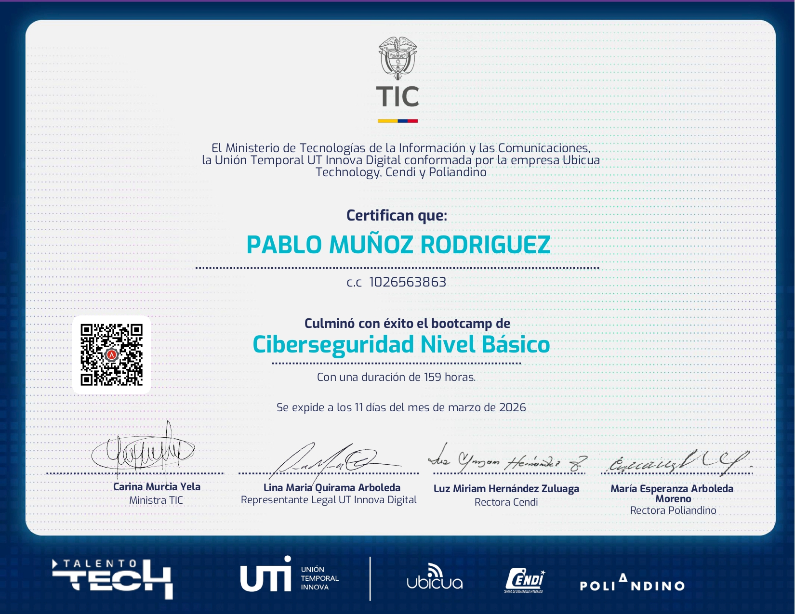
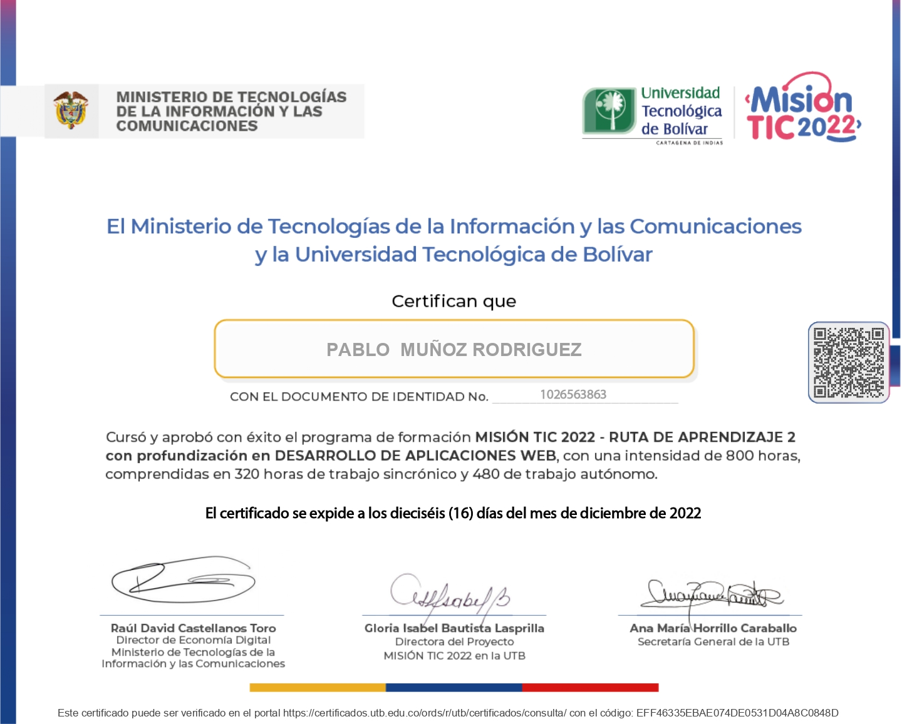
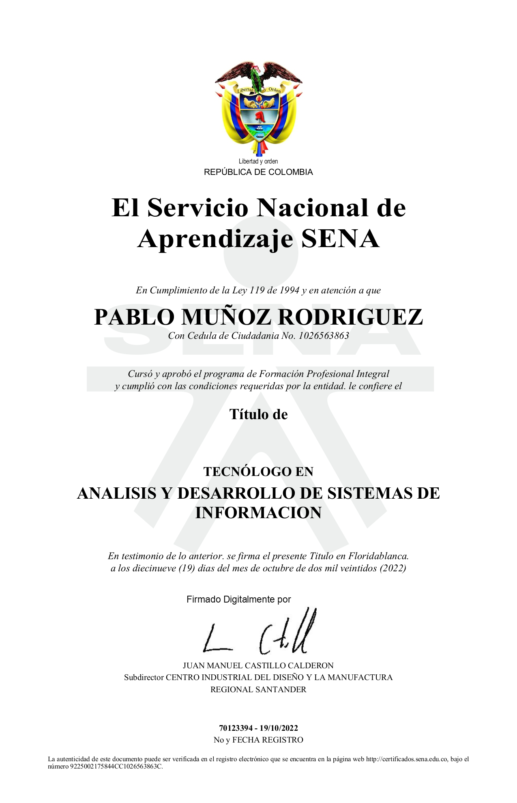
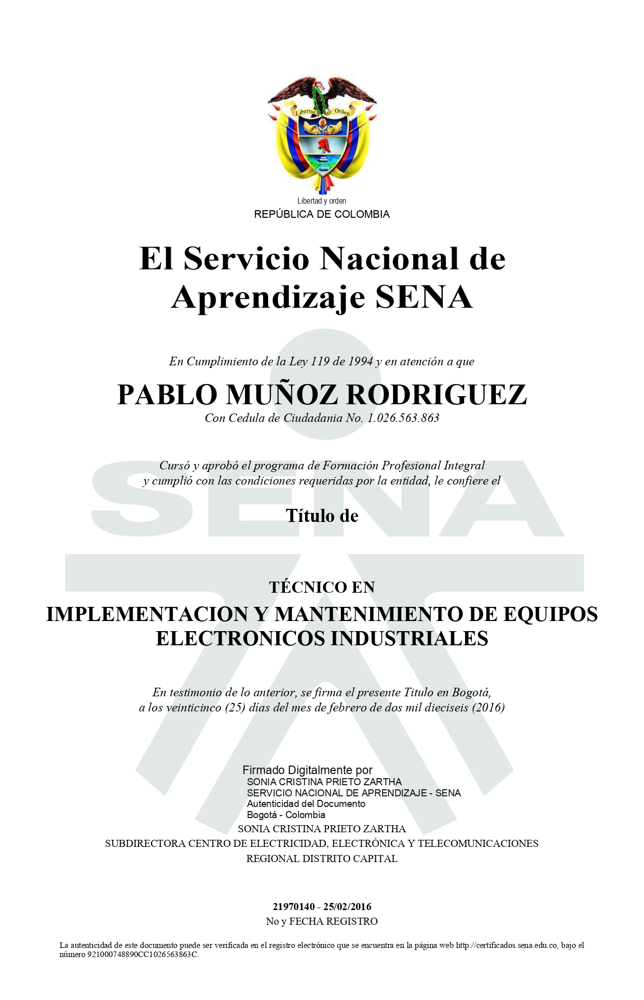

🔒 Ciberseguridad Nivel Básico
Bootcamp de ciberseguridad enfocado en fundamentos de protección de sistemas, análisis de vulnerabilidades y buenas prácticas de seguridad informática.

👨🎓 Ingeniero de Sistemas
Formación en tecnologías de la información, orientado a la eficiencia, seguridad y optimización de sistemas.

📊 Diplomado en Excel y Power BI
Diplomado en Excel y Power BI enfocado en análisis de datos, generación de reportes y visualización de información mediante dashboards interactivos.

🌐 Desarrollo Web Full Stack
Bootcamp de desarrollo web full stack enfocado en la creación de aplicaciones completas, desde el frontend hasta el backend.

💻 Desarrollo de Software
Diplomado en desarrollo de software con énfasis en desarrollo web, abarcando tecnologías como Java, Python y construcción de aplicaciones web.

📱 Tecnólogo en Análisis y Desarrollo de Sistemas de Información
Formación en desarrollo de sistemas de información, enfocada en el ciclo de vida del software, abarcando análisis, diseño, desarrollo, pruebas y mantenimiento de aplicaciones.

🛠 Técnico en Implementación y Mantenimiento de Equipos Electrónicos Industriales
Técnico en implementación y mantenimiento de equipos electrónicos industriales, con formación en electrónica básica y de potencia, sistemas embebidos y lectura de circuitos.
